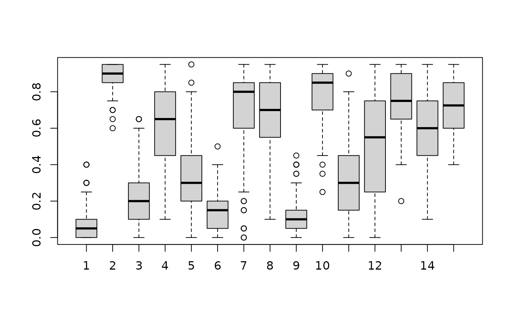
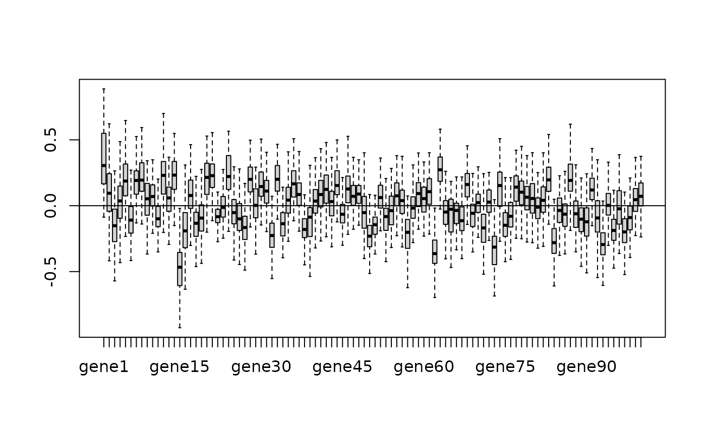

Running_MegaLMM.Rmd
library(MegaLMM)The following code generates simulated data, and then loads it into the R workspace. It can be skipped if you are loading your own data in a different way
seed = 1 # for reproducibility
nSire = 50 # simulation design is a half-sib design: each of nSire fathers has nRep children, each with a different female
nRep = 10
nTraits = 100
nFixedEffects = 2 # fixed effects are effects on the factors
nFactors = 10
factor_h2s = c(rep(0,nFactors/2),rep(0.9,nFactors/2)) # factor_h2 is the % of variance in each factor trait that is explained by additive genetic variation.
# The is after accounting for the fixed effects on the factors
Va = 2 # residual genetic variance in each of the observed traits after accounting for the factors
Ve = 2 # residual microenvironmental variance in each of the observed traits after accounting for the factors
Vb = 0 # magnitude of the fixed effects (just factors)
new_halfSib_simulation('Sim_FE_1', nSire=nSire,nRep=nRep,p=nTraits, b=nFixedEffects, factor_h2s= factor_h2s,Va = Va, Ve = Ve,Vb = Vb)
load('setup.RData')
Y = setup$Y
data = setup$data
K = setup$KThere are several parameters that control the specific model that
MegaLMM will construct. Most importantly, we need to specify
K, the number of latent factors and
h2_divisions, the number of discrete values between 0 and 1
to evaluate each variance component proportion for each random
effect.
Several other parameters are also necessary and are described in the
help file: ?MegaLMM_control
run_parameters = MegaLMM_control(
max_NA_groups = 3,
scale_Y = FALSE, # should the columns of Y be re-scaled to have mean=0 and sd=1?
h2_divisions = 20, # Each variance component is allowed to explain between 0% and 100% of the total variation. How many segments should the range [0,100) be divided into for each random effect?
h2_step_size = NULL, # if NULL, all possible values of random effects are tried each iteration. If in (0,1), a new candidate set of random effect proportional variances is drawn uniformily with a range of this size
burn = 00, # number of burn in samples before saving posterior samples
K = 15 # number of factors
)MegaLMM is a Bayesian model, so all unknown parameters require priors. While all prior distributions can be modified by the user, some have fixed distributional forms with tunable hyperparameters, while others are more flexible and take as inputs user-provided functions (with very strict requirements… advanced users only!).
tot_Y_var is the residual variance of each trait after
accounting for the factors and other fixed effectstot_F_var is the residual variance of the factor
traits, after accounting for any fixed effects. This value is actually
set to 1 in the model, but is introduced as a working parameter in the
algorithm to improve mixing.Lambda_prior controls the prior distribution of the
elements of Lambda, the factor loadings matrixh2_priors_resids_run and
h2_priors_factors_fun specifies the priors on each variance
component proportion. These need to be specified as functions that take
as input a vector of variance component proportions across all random
effects, and returns a value proportion to the relative prior
probability of that vector relative to any other vector. These values do
not need to be normalized. The second argument, n specifies
the number of discrete values that the prior is evaluated at. This is
not the same as h2_divisions from
MegaLMM_control because it counts the total number of
grid-cells over the entire prior simplex, not the per-variance-componet
number of divisions.Note: MegaLMM_priors can be run after constructing the
MegaLMM model (see below). This can be convenient because
n above in the specification of the h2_priors
functions needs the number of grid-cells in the prior simplex which may
be difficult to calculate by hand. See ?MegaLMM_prior for
more details.
priors = MegaLMM_priors(
tot_Y_var = list(V = 0.5, nu = 5), # Prior variance of trait residuals after accounting for fixed effects and factors
tot_F_var = list(V = 18/20, nu = 20), # Prior variance of factor traits. This is included to improve MCMC mixing, but can be turned off by setting nu very large
Lambda_prior = list(
sampler = sample_Lambda_prec_horseshoe, # function that implements the horseshoe-based Lambda prior described in Runcie et al 2020. See code to see requirements for this function.
prop_0 = 0.1, # prior guess at the number of non-zero loadings in the first and most important factor
delta = list(shape = 3, scale = 1), # parameters of the gamma distribution giving the expected change in proportion of non-zero loadings in each consecutive factor
delta_iterations_factor = 100 # parameter that affects mixing of the MCMC sampler. This value is generally fine.
),
h2_priors_resids_fun = function(h2s,n) 1, # Function that returns the prior density for any value of the h2s vector (ie the vector of random effect proportional variances across all random effects. 1 means constant prior. Alternative: pmax(pmin(ddirichlet(c(h2s,1-sum(h2s)),rep(2,length(h2s)+1)),10),1e-10),
h2_priors_factors_fun = function(h2s,n) 1 # See above. Another choice is one that gives 50% weight to h2==0: ifelse(h2s == 0,n,n/(n-1))
)The following set of functions actually contructs theh MegaLMM model and prepares it for sampling.
The first function setup_model_MegaLMM returns an object
of class MegaLMM_state which stores all information about
the MCMC chain. It is a list including the following components:
current_state: a list with elements holding the current
values for all model parameters. Each parameter is stored as a 2d
matrix. Variable names correspond as closely as possible to those
described in the manuscript: Runcie et al 2020.Posterior: a list with elements 3d or 2d arrays holding
posterior samples (or posterior means) of specified model parameters. By
default, samples of all parameters are stored. However these matrices
can be large if data is large, so parameters can be dropped from this
list by removing their names from the lists
MegaLMM_state$Posterior$posteriorSample_params and
MegaLMM_state$Posterior$posteriorMean_params.run_ID: The current state of the chain plus Posterior
samples and any diagnostic plots are automatically saved in a folder
with this name during the run.Other elements of this list are less useful except for advanced users:
data_matrices: a list with all the design matrices (and
some extra associated pre-calculated matrices) used for evaluating the
modelpriors: a list with hyperparameters for all prior
distributionsrun_parameters: various statistics specifying the
dimensions and processing steps applied to the data and model
structurerun_variables: various values that are pre-calculated
and stored for computational efficiency.Setting up the MegaLMM_state object for sampling has
several steps.
setup_model_MegaLMM. The design of this function is
intended to be similar to lme4 or lme4qtl. We
use R’s formula interface to specify fixed and random effects. However,
for convience and extendability (which will be documented later), we
break up the right and left-hand side of the typical model statement
into two arguments, with the second being the typical right-hand side
(RHS) of a mixed model in R. See ?lmer for more details.
However note that correlated random effects are not allowed, so
(1+Fixed1 | animal) and (1+Fixed1 || animal)
are the same. You can also specify covariance matrices for any random
effect grouping variable using the relmat argument.Y into chunks with similar patterns of missing
data. This is only useful if there are many NA values in Y,
and these are clumped so groups of observations have the same patterns
of NA and non-NA values. But if this exists, using this can greatly
improve MCMC mixing. The function make_Missing_data_map
tries to guess at the optimal chunk pattern for your data. If you know
it yourself, you can specify the groups directly in
set_Missing_data_map.set_priors_MegaLMM funciton.initialize_variables_MegaLMM.initialize_MegaLMM to pre-calculate many
large matrices that are needed during sampling. This step can take very
long to run and require large amounts of memory if the sample size is
large and/or there are many random effect terms. A progress par is
provided, but it is often important to check R’s memory usage during
this step to identify problems.clear_Posterior. This isn’t critical if this is the
first time running the model (with this run_ID), but is
good to include in case your directory structure isn’t clean. Note,
though, that if you were hoping to save posterior samples from an
earlier run, this will erase them all!
MegaLMM_state = setup_model_MegaLMM(Y, # n x p data matrix
~Fixed1 + (1|animal), # RHS of base model for factors and residuals. Fixed effects defined here only apply to the factor residuals.
data = data, # the data.frame with information for constructing the model matrices
relmat = list(animal = K), # covariance matrices for the random effects. If not provided, assume uncorrelated
run_parameters=run_parameters,
run_ID = 'MegaLMM_example'
)
maps = make_Missing_data_map(MegaLMM_state)## map N_groups max_group_size total_kept_NAs
## 1 1 1 500 0
MegaLMM_state = set_Missing_data_map(MegaLMM_state,maps$Missing_data_map)
MegaLMM_state = set_priors_MegaLMM(MegaLMM_state,priors) # apply the priors
MegaLMM_state = initialize_variables_MegaLMM(MegaLMM_state) # initialize the model## [1] "initializing Lambda_prec horseshoe"
## [1] "initializing B_prec horseshoe"
MegaLMM_state = initialize_MegaLMM(MegaLMM_state) # run the initial calculations## [1] "Pre-calculating random effect inverse matrices for 1 groups of traits and 20 sets of random effect weights"
##
|
| | 0%
|
|==== | 5%
|
|======= | 10%
|
|========== | 15%
|
|============== | 20%
|
|================== | 25%
|
|===================== | 30%
|
|======================== | 35%
|
|============================ | 40%
|
|================================ | 45%
|
|=================================== | 50%
|
|======================================================================| 100%
MegaLMM_state = clear_Posterior(MegaLMM_state) # prepare the output directoriesNow (finally!) you’re ready to run the MCMC chain.
A MCMC chain is a way of fitting parameters from a Bayesian model The chain is a sequence of draws from the Posterior distribution of each parameter. MegaLMM uses a Gibbs sampler, which means that we iterate through all of the model’s parameters and for each parameter draw a new value from it’s posterior holding all other parameters constant This works, but the individual draws are not independent draws from the joint posterior of all parameters. Therefore, to get independent draws, we have to collect many posterior samples, and then save only a portion of them. Also, it may take many iterations for the MCMC chain to converge to the central part of the distribution. This is the burnin period, and we do not store these values (they are not useful). At the end, we have a collection of samples from the posterior distribution of each parameter. We can use these samples to characterize each distribution: mean, SD, histogram, HPDinterval, etc.
The way MegaLMM works is that you ask the program to collect a small number of samples And then can assess how the chain is performing (how well it is mixing, is it converged?) And then either save the samples as posterior samples, or declare them as burn-in and discard them. Then, you can ask for more samples, and repeat until you have enough.
MegaLMM_state = clear_Posterior(MegaLMM_state)
MegaLMM_state = reorder_factors(MegaLMM_state)
# The following code is optional, but tries to guess for your system how many CPUs to use for fastest processing
# (n_threads = optimize_n_threads(MegaLMM_state,seq(1,RcppParallel::defaultNumThreads(),by=1),times=2))
# set_MegaLMM_nthreads(n_threads$optim)
# now do sampling is smallish chunks
n_iter = 100; # how many samples to collect at once?
for(i in 1:5) {
print(sprintf('Run %d',i))
MegaLMM_state = sample_MegaLMM(MegaLMM_state,n_iter) # run MCMC chain n_samples iterations. grainSize is a paramter for parallelization (smaller = more parallelization)
U = as.matrix(with(setup,U_F %*% Lambda+U_R))
plot(diag(cor(U,get_posterior_mean(MegaLMM_state$Posterior$U))))
MegaLMM_state = save_posterior_chunk(MegaLMM_state) # save any accumulated posterior samples in the database to release memory
print(MegaLMM_state) # print status of current chain
plot(MegaLMM_state,setup = setup) # make some diagnostic plots. These are saved in a pdf booklet: diagnostic_plots.pdf
# set of commands to run during burn-in period to help chain converge
if(MegaLMM_state$current_state$nrun < MegaLMM_state$run_parameters$burn || i < 3) {
MegaLMM_state = reorder_factors(MegaLMM_state,drop_cor_threshold = 0.6) # Factor order doesn't "mix" well in the MCMC. We can help it by manually re-ordering from biggest to smallest
MegaLMM_state = clear_Posterior(MegaLMM_state)
print(MegaLMM_state$run_parameters$burn)
}
}## Warning in cor(F): the standard deviation is zero
## Warning in cor(F): the standard deviation is zero
# Because this was a simulation, we can make some special diagnostic plots by passing in the true values
plot(MegaLMM_state,setup = setup) Look for the output in the MegaLMM_example (our
run_ID) directory.
# reload the whole database of posterior samples
MegaLMM_state$Posterior = reload_Posterior(MegaLMM_state)
U_hat = get_posterior_mean(MegaLMM_state,U_R + U_F %*% Lambda)
# all parameter names in Posterior
MegaLMM_state$Posterior$posteriorSample_params## [1] "Lambda" "U_F" "F" "delta" "tot_F_prec"
## [6] "F_h2" "tot_Eta_prec" "resid_h2" "B1" "B2_F"
## [11] "B2_R" "U_R" "cis_effects" "Lambda_m_eff" "Eta"
MegaLMM_state$Posterior$posteriorMean_params # these ones only have the posterior mean saved, not individual posterior samples## [1] "Eta_mean"
# instead, load only a specific parameter
Lambda = load_posterior_param(MegaLMM_state,'Lambda')
# boxplots are good ways to visualize Posterior distributions on sets of related parameters
boxplot(MegaLMM_state$Posterior$F_h2[,1,])
# get posterior distribution on a function of parameters
# This is how to calculate the G-matrix for random effect #1 (ie animal above.)
G_samples = get_posterior_FUN(MegaLMM_state,t(Lambda) %*% diag(F_h2['animal',]) %*% Lambda + diag(resid_h2['animal',]/tot_Eta_prec[1,]))
# get posterior mean of a parameter
G = get_posterior_mean(G_samples)
# get Highest Posterior Density intervals for paramters
F_h2_HPD = get_posterior_HPDinterval(MegaLMM_state,F_h2)
# make a boxplot to summarize a subset of parameters.
boxplot(MegaLMM_state$Posterior$B1[,1,],outline=F);abline(h=0)